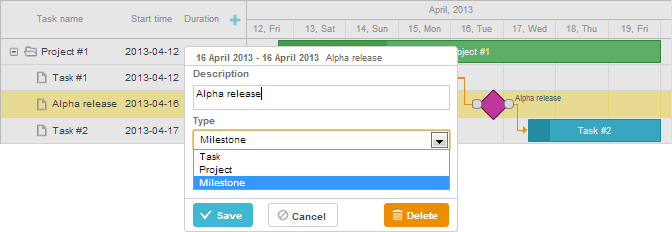

Available only in PRO Edition
Milestones
This functionality is available only in the PRO edition
Milestones are tasks with zero duration that are used to mark out important dates of the project, some key events or goals.
You may use milestones, for example, to highlight dates of review meetings or dates of expected completion of project's phases.
Programmatically, a milestone is one of predefined types of tasks. But it's handled as a regular task, i.e. it triggers the same events and templates.
 Related sample: Projects and milestones
Related sample: Projects and milestones
Generally, to provide a possibility to add milestones to a chart:
- Add an extra section to the lightbox - Typeselect Control - that will let your users to change the type of tasks and select milestones.
gantt.config.lightbox.sections = [ {name: "description", height: 70, map_to: "text", type: "textarea"}, {name: "type", type: "typeselect", map_to: "type"}, {name: "time", height: 72, type: "duration", map_to: "auto"} ];
- Define the rightside_text or leftside_text template to set a text label for a milestone. Note, the label set with the task_text template is not displayed
as milestones have zero duration.
gantt.templates.rightside_text = function(start, end, task){ if(task.type == gantt.config.types.milestone){ return task.text; } return ""; };
- Enable the order_branch property to simplify things for your end users. The option enables dragging tasks within the parent branch and will let your users create milestones at any place but
then drag them to the right positions.
gantt.config.order_branch = true;
After you have been completed these steps, your Gantt chart is fully ready to work with milestones.

Related sample: Projects and milestones
Specifying milestones in a data set
To define milestones in the initial data set, set the type property of a data item to the 'milestone' value (values are stored in the types object):
var data = {
tasks:[
{id:1, text:"Project #1", type:gantt.config.types.project, open:true},
{id:2, text:"Task #1", start_date:"12-04-2020", duration:3, parent:1},
{id:3, text:"Alpha release", type:gantt.config.types.milestone, parent:1, start_date:"14-04-2020"}], links:[]
};